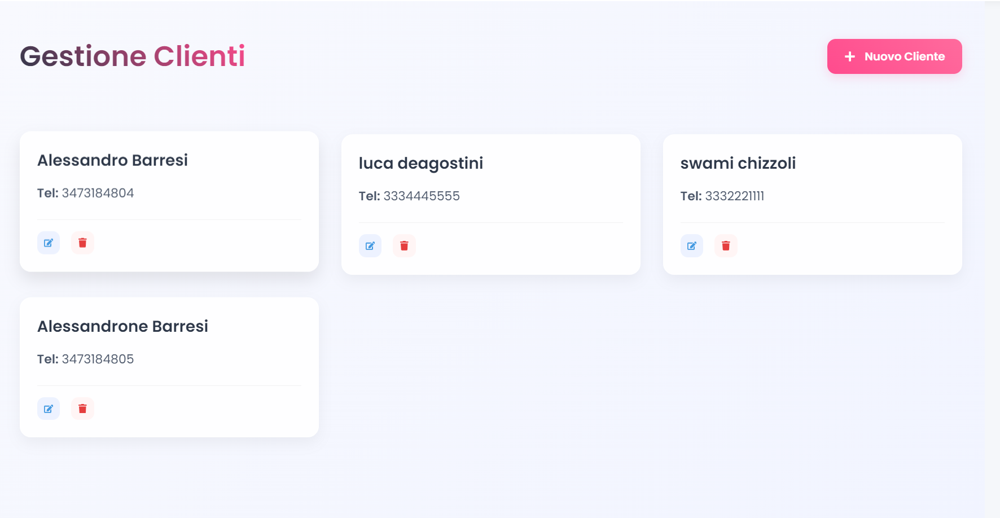
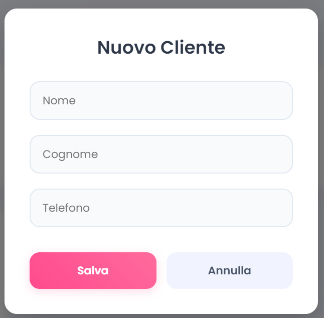
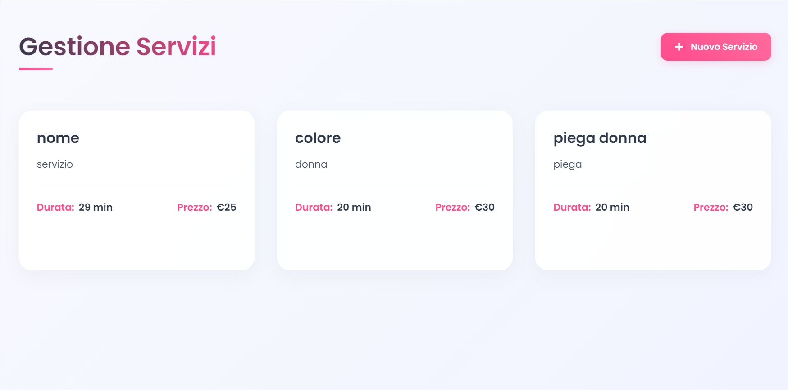
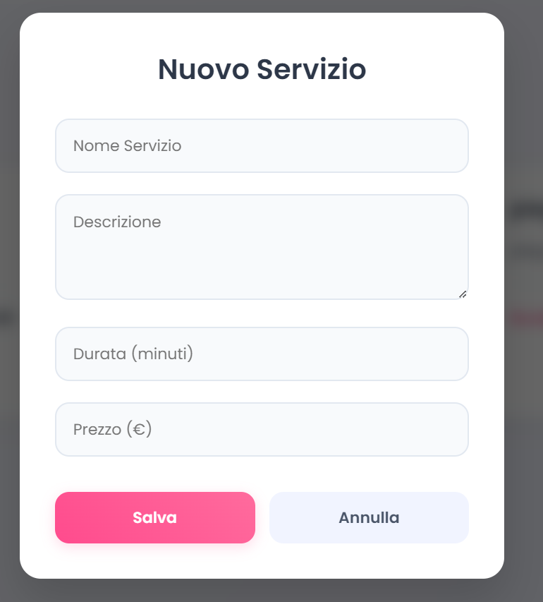
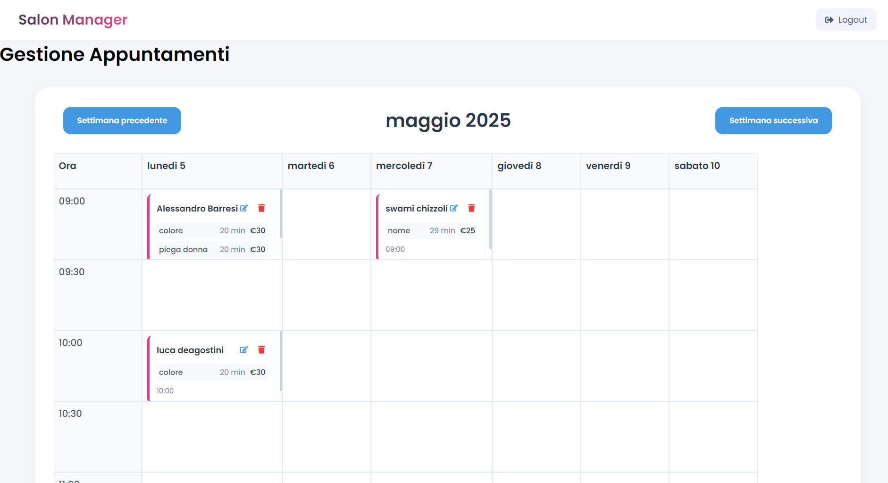

Il salone gira da solo, tu pensa ai clienti
Salon Manager gestisce clienti, listino servizi e agenda appuntamenti in un'unica web app: backend Python e frontend Node.js che dialogano via REST API.

Tre sezioni, zero curva di apprendimento
La home di Salon Manager porta dritti dove serve: Gestione Clienti, Gestione Servizi e Agenda Appuntamenti, con logout integrato per la sicurezza dell'account.
home
Anagrafica clienti che si naviga da sola
Cerca, aggiungi e modifica i clienti del salone: nome, cognome, email e telefono con azioni rapide su ogni record e un modulo dedicato per i nuovi inserimenti.
- Ricerca istantanea sulla tabella
- Modifica e cancellazione per riga


clientiIl listino, sempre in ordine
Ogni servizio ha nome, descrizione, prezzo e durata. Il listino si aggiorna in pochi click e la durata alimenta direttamente la pianificazione dell'agenda.


serviziL'agenda che organizza la giornata
Calendario interattivo con viste giornaliera, settimanale e mensile. I nuovi appuntamenti si creano direttamente dalla cella del calendario: il flusso naturale di chi lavora al banco.
- Tre viste commutabili
- Creazione appuntamenti in-place

agendaCom'è costruito
Frontend Node.js e backend Python separati, che comunicano tramite REST API con persistenza su JSON: architettura semplice da capire, facile da estendere.
Provalo sul tuo PC
Scarica l'applicazione completa oppure torna al portfolio per gli altri progetti.